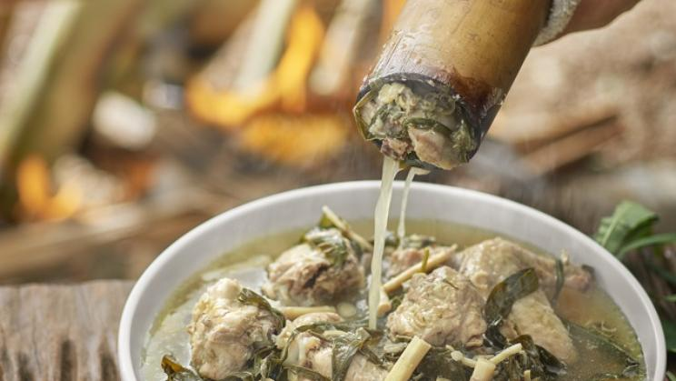

Ayam masak buluh (fowl cooked in bamboo) is one of the more popular preparations. The Semai tribes in Gua Musang marinate the jungle fowl with thinly sliced daun semomok, salt, chilli and turmeric. Then it is stuffed into bamboo and roasted over fire